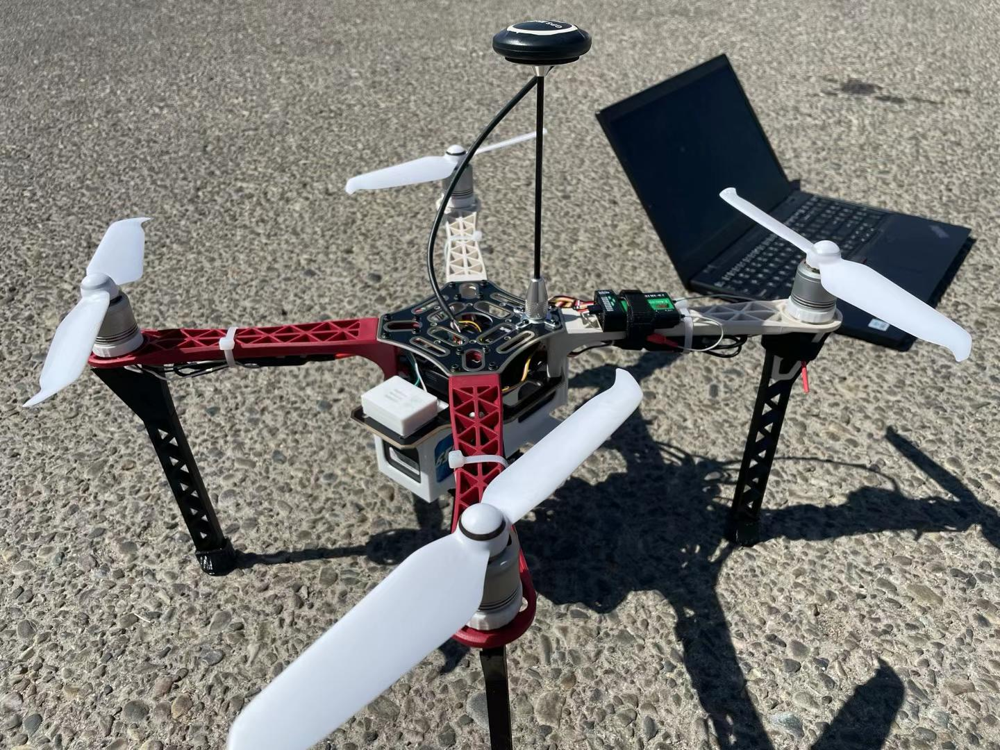

AUAV — Technical Intern
- Simulated drone swarm formations with Python and Skybrush, optimizing flight paths for collision avoidance and visual impact.
- Created 3D pre-visualization assets in Blender to align technical flight constraints with artistic design.
- Executed automated flight tests and analyzed telemetry data to improve fleet synchronization and battery efficiency.